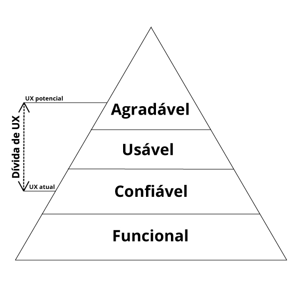
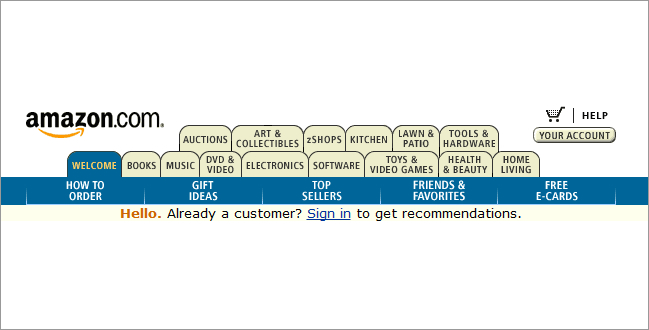
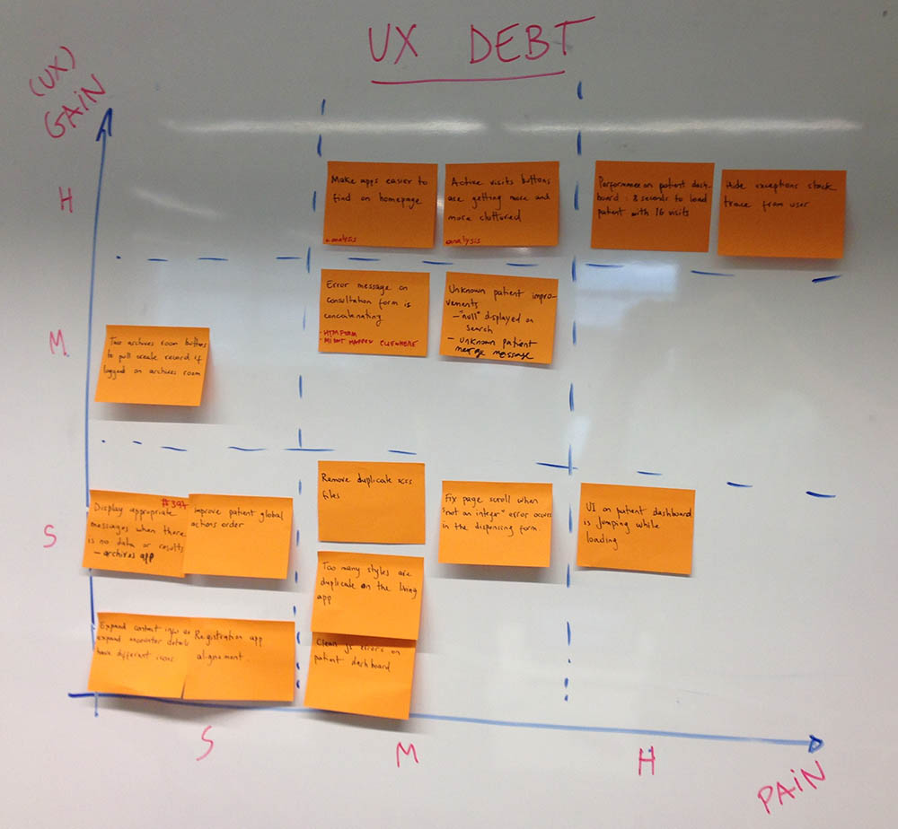

Dívida de UX
O termo "Dívida de UX" surgiu como referência ao termo Dívida Técnica. Dívida técnica foi primeiramente apresentada por Ward Cunningham para descrever decisões de design de código (geralmente rápidas e de baixa qualidade) que ao longo prazo geram impacto negativo no desenvolvimento deixando-o mais lento.
Usa-se "dívida", pois assim como dívidas, a dívida técnica gera juros que terão que ser pagos depois. No caso da dívida técnica gera lentidão para desenvolver funcionalidades novas e a dívida de UX gera uma experiência baixa para o usuário.
O que é dívida de UX?
Dívida de UX é a lacuna que existe entre a experiência que o seu produto tem hoje e o potencial da experiência que ele pode ter dado o devido tempo e os recursos necessários, ou seja, todas as melhorias na experiência do usuário que o produto atual pode ter.
Pirâmide das necessidades de UX

Da mesma maneira que a dívida técnica, a dívida de UX vai se acumulando ao longo do desenvolvimento de um produto devido a decisões rápidas e de baixa qualidade. Tambêm pode ser criada devido a falta de visão da experiência do produto como um todo gerando falhas e inconsistencias.
Tipos de dívida de UX
Dívida de UX inclui desde pequenos ajustes na interface, performace, consistência, até mudanças mais drásticas que envolvem uma análise maior e mudanças nos paradigmas de navegação.
Outros exemplos são: falta de padronização entre elementos, por exemplo botões que possuem formato e cores diferentes, elementos de uma página que estão desalinhados, interfaces mal projetadas, páginas muito carregadas de informação, validações e mensagens de formulários que não estão corretas ou mal escritas.
Dívida de UX intencional
A dívida de UX intencional é criada quando se opta pela opção mais rápida e não pela melhor decisão que vai tomar mais tempo para ser implementada. Isso pode ocorrer quando há pressão para entrega de um produto e o time acaba pecando na experiência do usuário. A experiência nunca deve ser cortada mas sim deve-se manter uma padronização entre todas as funcionalidades da aplicação.
Dívida de UX não intencional
A dívida de UX não intencional ocorre quando não se tem um total conhecimento sobre as necessidades dos usuários ou não se sabe exatamente quem é o público alvo e seu conhecimento de tecnologia, dessa maneira uma experiência errada é projetada gerando dívidas de UX. Outra maneira não intencional é quando não se pensa na experiência como um todo ou não se sabe qual a experiência presente em outras funcionalidades.
Adicionar mais e mais

Isso ocorre quando criamos um design e continuamente adicionamos mais e mais links, ou mais e mais tabs, até percebemos que chegou em um estado crítico e um redesign é necessário. Outro exemplo é quando mais e mais funcionalidades são adicionadas sem pensar como a experiência é afetada e como essas funcionalidades conversam entre si.
Priorização
Após análise e coleta das dívidas de UX, uma das maneiras de se fazer a priorização é a seguinte:
- Mapear todos as dívidas de UX encontrados
- Separar as dívidas por categorias (ajuste de interface, análise, etc.)
- Criar uma matriz de Ganho X Esforço com 3 níveis (Baixo, Médio e Alto)
- Classificar cada dívida entre as 9 possibilidades
- Priorizar primeiramente as dívidas que tem maior ganho e menor esforço, depois médio esforço e maior ganho e assim por diante.
Exemplo de priorização de Dívida de UX

Conclusão
É importante que a dívida de UX seja análisada desde o início do desenvolvimento de um produto para que assim evita-se o acumulo e potencialize a experiência do usuário. A dívida irá ocorrer diversas vezes, mas manter tudo documentado e constantemente priorizado é importante para assegurar a entrega da melhor experiência possível.
Referências: